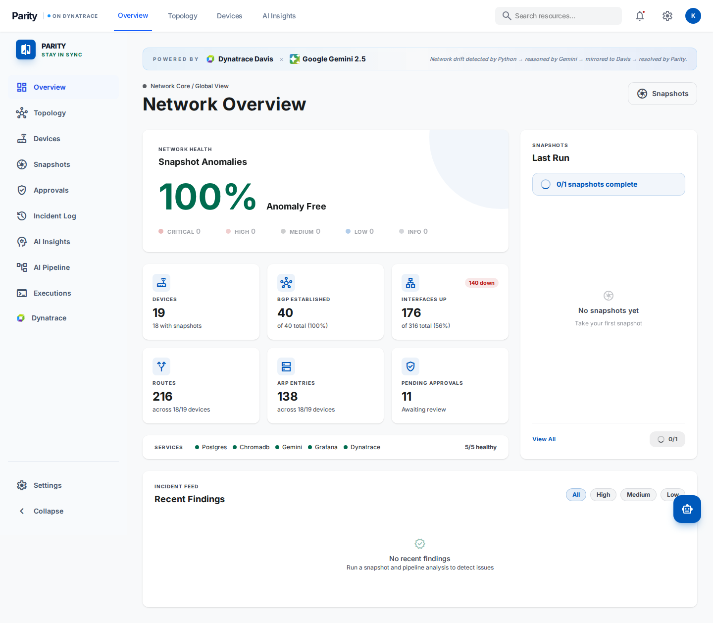
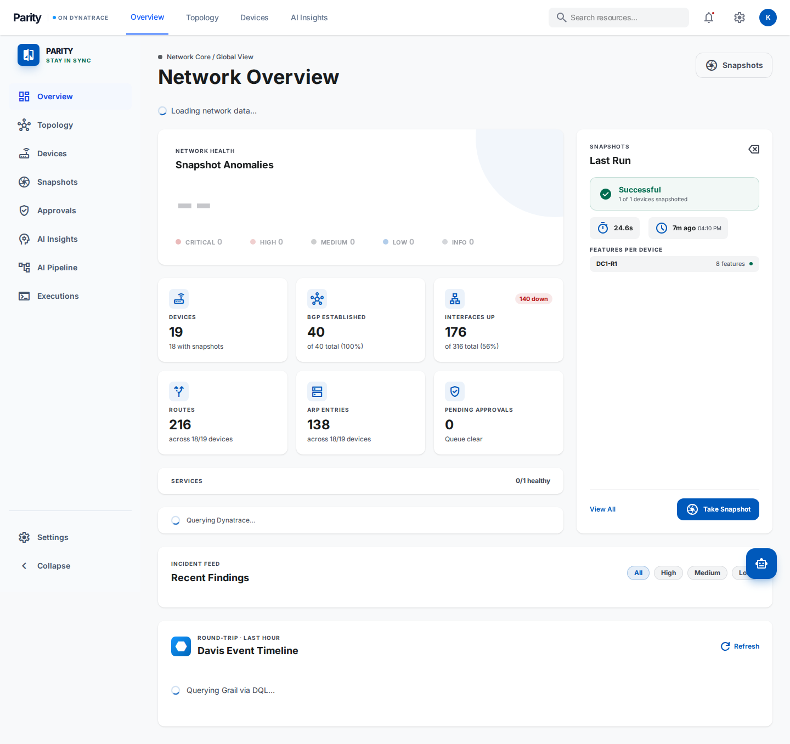
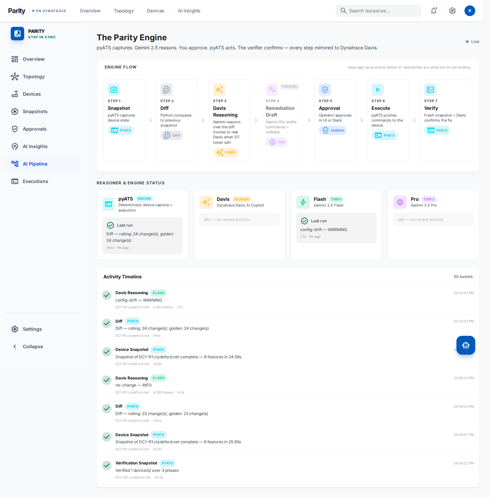
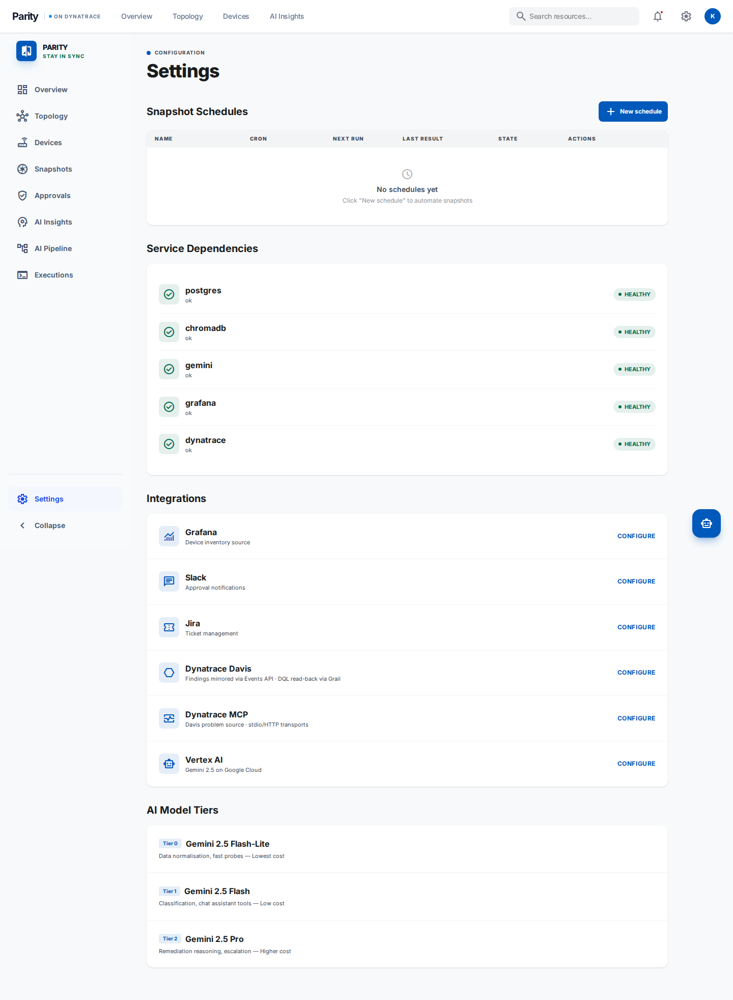
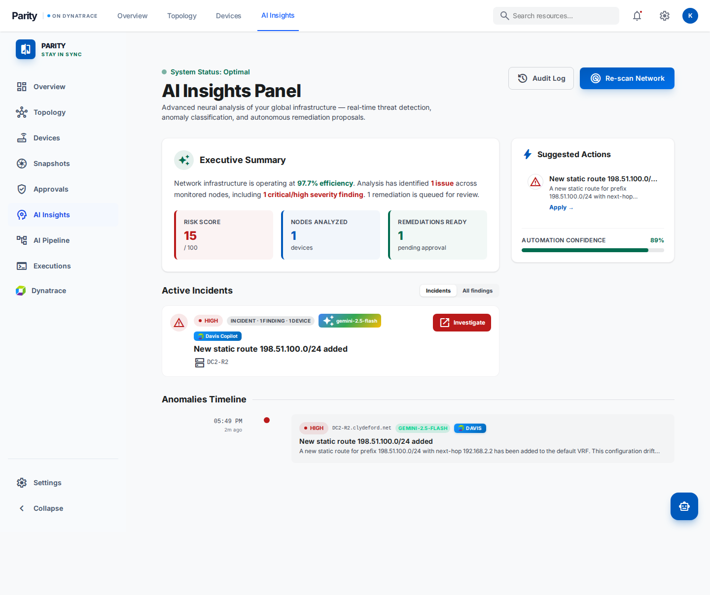

Four induced failures. Two live Cisco IOS-XE routers. One autonomous loop — detect, reason, approve, execute, verify, resolve — driven through Parity end-to-end and mirrored, finding-for-finding, into a live Dynatrace Grail tenant in under a minute per scenario.
A configuration drift is induced over SSH on a production-style router. Parity detects it via a pyATS snapshot, classifies it with Gemini 2.5 Flash, queues a human approval, executes the remediation, re-verifies, and resolves the incident — and in lock-step mirrors every lifecycle moment to Dynatrace Davis via the Generic Events API. The test then queries Davis via DQL to prove the round-trip — both sides agree, in seconds.
Six gates: API health, dependency mesh (now including a Grail DQL probe to the live Dynatrace tenant), ICMP reachability of each lab target, and a verified golden baseline snapshot on file for every device under test.
Every config push is screened for management-subnet references and a list of lockout-inducing tokens. Reachability is checked before and after each push; the harness aborts loud if the device falls silent.
Parity takes a fresh snapshot, reasons over the diff with Gemini 2.5, and — the moment a Finding row lands in Postgres — fires a CUSTOM_DEPLOYMENT event into Davis with the finding ID, severity, category, device, and correlation key as queryable attributes.
An approval is queued, executed via pyATS, re-verified by a second snapshot, the finding flips to resolved — and a paired resolved event fires to Davis. The harness then queries Davis via DQL to confirm both events arrived.
A new Loopback99 interface with IP 192.0.2.99/32 has been configured and is now active on the device. This connected route is now visible in the routing table and the BGP prefix count increased by one for all neighbors. This configuration drifts from the blessed baseline. — gemini-2.5-flash · 4 evidence paths · synthesised remediation from zero-state
+interface Loopback99 + description PARITY-E2E-DO-NOT-USE + ip address 192.0.2.99 255.255.255.255 +router bgp 65100 + address-family ipv4 + network 192.0.2.99 mask 255.255.255.255 + exit-address-family
−configure terminal −router bgp 65100 − address-family ipv4 − no network 192.0.2.99 mask 255.255.255.255 − exit-address-family −no interface Loopback99 −end
$ show ip route 192.0.2.99
% Network not in table
A new static route for 198.51.100.0/24 via next-hop 192.168.2.2 has been detected in the default VRF. This route was added in the last collection interval and represents a deviation from the blessed baseline configuration. This change could alter traffic forwarding paths. — gemini-2.5-flash · single diff path · confidence 1.00
+ip route 198.51.100.0 255.255.255.0 192.168.2.2
−configure terminal −no ip route 198.51.100.0 255.255.255.0 192.168.2.2 −end
$ show ip route 198.51.100.0
% Network not in table
The other direction. Davis problems flow into Parity via the MCP layer. Here three problems are ingested, two are flipped to CLOSED upstream via a test-only admin endpoint on the stub, and Parity's dashboard cleanly reflects the change — no manual touch, no orphan tiles.
The dashboard, captured by a headless Playwright run against the public Cloudflare-fronted Parity URL. The gradient banner is the Davis-integration tile — live event counts, masked token prefix, deep link to Dynatrace — and the timeline below it is rendered directly from a DQL query against Grail.





$ fetch events, from:-1h
| filter source == "parity"
| sort timestamp desc
| limit 50
| Timestamp UTC | Action | Severity | Title | Device |
|---|---|---|---|---|
| 2026-05-16 12:13:53 | resolved | high | Parity finding resolved: New static route 198.51.100.0/24 | DC2-R2.clydeford.net |
| 2026-05-16 12:12:15 | created | high | Parity finding raised: New static route 198.51.100.0/24 | DC2-R2.clydeford.net |
| 2026-05-16 12:10:25 | resolved | high | Parity finding resolved: New Loopback99 interface 192.0.2.99/32 | DC1-R1.clydeford.net |
| 2026-05-16 12:10:25 | resolved | high | Parity finding resolved: BGP route(s) removed: 99/32 | DC1-R1.clydeford.net |
| 2026-05-16 12:09:01 | created | high | Parity finding raised: New Loopback99 interface and route 192.0.2.99/32 | DC1-R1.clydeford.net |
| 2026-05-16 12:08:19 | created | high | Parity finding raised: BGP route(s) removed: 99/32 | DC1-R1.clydeford.net |
| 2026-05-16 12:02:34 | created | high | Parity finding raised: New Loopback99 interface and connected route | DC1-R1.clydeford.net |
| 2026-05-16 11:58:40 | resolved | high | Parity finding resolved: New Loopback99 interface 192.0.2.99/32 | DC1-R1.clydeford.net |
scripts/dynatrace_setup.py is idempotent — re-running it upserts in place via stable externalId handles, so the dashboard and workflow live in your tenant as first-class artefacts you can edit, share, or version.
Nine DQL tiles: KPIs for findings raised / resolved / distinct devices, a 5-minute lifecycle timeseries, severity honeycomb, drift-category pie, top-devices bar chart, and the 25 most recent events as a table.
Open dashboard →Six markdown-and-DQL cells that walk a presenter through Parity's activity in this tenant. Every cell is editable — adjust queries live during the demo and the Notebooks app re-runs as you type.
Open notebook →
Watches for source=="parity" AND parity.action=="created" AND parity.severity IN ("high","critical"); relays each match as a Davis AVAILABILITY event. Fires correctly — needs a one-time Authorization Settings click in the workflow UI before the relay action runs.
Each row is a Dynatrace write surface. The integration probes them lazily on first use and caches the result — every Parity finding fans out to all granted surfaces. Expanding the token in the Dynatrace UI lights up the missing surfaces with no code change required.
| Surface | Required scope | What it adds | Status |
|---|---|---|---|
| Davis Events | events:write |
CUSTOM_DEPLOYMENT per finding lifecycle moment — already flowing. | GRANTED |
| Grail / DQL | storage:*:read |
Read-back query for the dashboard + round-trip verification. | GRANTED |
| Workflows / Documents | automation:workflows:writedocuments:write |
Dashboard + workflow provisioning via scripts/dynatrace_setup.py. |
GRANTED |
| Custom Devices | environment-api:entities:write |
Register each Parity-managed router as a Dynatrace entity; future events attach to it directly. | AWAITING |
| Log Ingest | environment-api:logs:write |
Structured Parity log lines into Grail's logs table — searchable via DQL. |
AWAITING |
| Bizevents | storage:bizevents:write |
CloudEvents-shaped finding lifecycle into the bizevents table for business-analytics queries. |
AWAITING |
| Metric Ingest | environment-api:metrics:write |
Counter metric parity.findings{action,severity} for time-series tiles + alerts. |
AWAITING |
The four awaiting rows are wired in the code today — silently skipped on a 403 from Dynatrace. Adding the scopes in the Dynatrace UI is the only thing standing between the current integration and the maximally rich one.
Parity's pyATS snapshot captures BGP operational state — sessions, prefix counts, capabilities — but not the policy attachments themselves; that data lives one layer down, in the running configuration. When a prefix-list silently filters a route, the reasoner sees the symptom (a route has vanished) and has no evidence of the cause (a new neighbor X prefix-list Y in line).
The reasoner stopped short, raised the finding for human attention, and refused to draft commands. This is the correct behaviour: an autonomous agent that hallucinates fixes for symptoms it does not understand is the failure mode every CIO loses sleep over. We replaced the scenario with a static-route drift the snapshot fully covers; the original case is filed as a follow-up to extend snapshot capture for BGP neighbour policy. The honest tooling moment is, in many ways, the most reassuring result in this report.
| # | Suite | Assertion | Result |
|---|---|---|---|
| 01 | E2E · pre-flight | /health/dependencies reports ok across postgres · chromadb · gemini · grafana · dynatrace | PASS |
| 02 | E2E · pre-flight | Dynatrace tenant kea15603 reachable via Grail DQL probe | PASS |
| 03 | E2E · pre-flight | DC1-R1 (192.168.20.13) responds to ICMP from the test runner | PASS |
| 04 | E2E · pre-flight | DC2-R2 (192.168.20.12) responds to ICMP from the test runner | PASS |
| 05 | E2E · pre-flight | DC1-R1 has a blessed golden snapshot on record | PASS |
| 06 | E2E · pre-flight | DC2-R2 has a blessed golden snapshot on record | PASS |
| 07 | E2E · scenario A | Loopback99 + 192.0.2.99/32 detected; severity high; category config-drift | PASS |
| 08 | E2E · scenario A | 192.0.2.99 absent from DC1-R1 RIB after verifier ran | PASS |
| 09 | E2E · scenario A | Created + resolved Davis events visible via DQL within 60 s | PASS |
| 10 | E2E · scenario C | Static route 198.51.100.0/24 detected; severity high; category config-drift | PASS |
| 11 | E2E · scenario C | 198.51.100.0 absent from DC2-R2 RIB after verifier ran | PASS |
| 12 | E2E · scenario C | Created + resolved Davis events visible via DQL within 60 s | PASS |
| 13 | E2E · Davis | Three Davis problems ingested cleanly on first call | PASS |
| 14 | E2E · Davis | All three findings active (requires_remediation=true) | PASS |
| 15 | E2E · Davis | Two closed problems flipped to requires_remediation=false; one untouched stayed active | PASS |
| 16 | UI · API | /health/dependencies surfaces dynatrace=ok with tenant id | PASS |
| 17 | UI · API | /dynatrace/status returns configured tenant, apps + live URLs | PASS |
| 18 | UI · API | /dynatrace/events round-trips into Grail and returns the stable schema | PASS |
| 19 | UI · API | /dynatrace/davis-problems queries dt.davis.problems via DQL | PASS |
| 20 | UI · Playwright | Dashboard renders the Dynatrace banner with the apps.dynatrace.com URL | PASS |
| 21 | UI · Playwright | Dashboard surfaces the Davis Event Timeline panel with live data | PASS |
| 22 | UI · Playwright | Pipeline page mentions Dynatrace Davis in the engine narrative | PASS |
| 23 | UI · Playwright | Settings integrations panel lists Dynatrace Davis separately from the MCP transport | PASS |
| 24 | UI · Playwright | Insights page loads cleanly | PASS |
| 25 | UI · Playwright | TopNav masthead shows the "on Dynatrace" badge | PASS |
Two networks are now in agreement about what is happening on the wire — Parity's, and Dynatrace's. The engineer who started this run can close the laptop knowing the work is finished, and the timeline is filed.